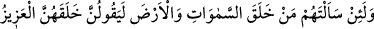
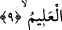

Tek bir dosta karşılık binlerce düşman, her bir arkadaş karşılığında binlerce zındık
meydana getirmiştir. Nerede mescid varsa kiliseyi de yine o bina etmiş, nerde savmaa
varsa orada bir harâbe, nerede bir taylesân/sarık ucu varsa orada bir zünnâr, nerede bir
ikrar varsa orada bir inkâr, nerede bir âbid varsa orada bir münkir, nerede bir dost
varsa orada bir düşman, nerede bir arkadaş varsa orada bir fâsık var etmiştir.
Dost isteyen düşmanın cevrini çekmez de ne yapar,
Defineyle yılan, gül ile diken, gam ile sevinç birliktedir.
Doğudan batıya her yeri pek çok güzellik ve nimete doldurmuş,
Ardından her nimeti bir zorluğun arkasına bağlamıştır.
Hâce Abdullah Ensârî (Herevî) demiştir ki: İnsan için üç hâl vardır ve onunla
meşgul olur. Bu ya ibâdettir ki ona faydası vardır. Ya günah işlemektir ki kendisine
ondan sadece pişmanlık ulaşır. Ya da gaflettir ki kendisine zarar verir. Kurân’dan daha
iyi bir öğüt var mıdır? Allah’tan daha şefkatli nasihatçı kimdir? İmandan daha iyi bir
sermâye var mıdır? Allah ile yapılan ticâretten daha kârlı ticâret hangisidir? Fakat
zararı kendisi seçen, ona katî bir şekilde râzı olan ve Mevlâsından uzak duran kişinin
durumu farklıdır. Öylece bir gün uyanır ki artık iş işten geçmiştir. Kendisine verilen
öğütten payını almayı o gün kabul eder ama bu öğütten hiçbir fayda görmez. Bu sıfat şu
kavmin sıfatıdır ki izzet sâhibi Allah şöyle buyurmaktadır: “Biz bunlardan daha zorba
olanları da helâk ettik. Nitekim öncekilerde örneği geçmiştir.”
Allah Teâlâ’dan bizi korumasını istiyoruz.
9. Andolsun ki, onlara gökleri ve yeri kim yarattı? diye sorsan; «Onları şüphesiz
güçlü olan, her şeyi bilen Allah yarattı» derler.
“Andolsun ki, onlara” senin kavmin olan Kureyş’e “gökleri ve yeri” ulvî ve süflî
ecrâmı “kim yarattı? diye sorsan” Sâni’ Teâlâ’yı itiraf ederek elbette “onları şüphesiz
güçlü olan” hüküm ve mülkünde çok üstün ve “her şeyi” yaratıklarının hallerini çok iyi
“bilen Allah yarattı» derler.”
Zîrâ bu türlü yaratılış ve yaratılışın halleri câhil ve âciz birisinin işi olamazdı. Bu
âyet insanın ne kadar câhil olduğundan bahsetmektedir. Çünkü insan kudret sâhibi, her
şeyi bilen yaratıcıyı kabul etmekle birlikte onu bırakıp bir başkasına ibadet eder.
Irşâd’da şöyle denilmektedir. Göklerin ve yerin yaratılışını gerçekte şânı bu olan bir
zâta isnâd ederler. Yoksa müşrikler Allah’tan bu sıfatlarla bahsetmezler. Yine de bu
ifâdenin bizzat onların ibâre ve sözleri olması da mümkündür.